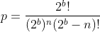
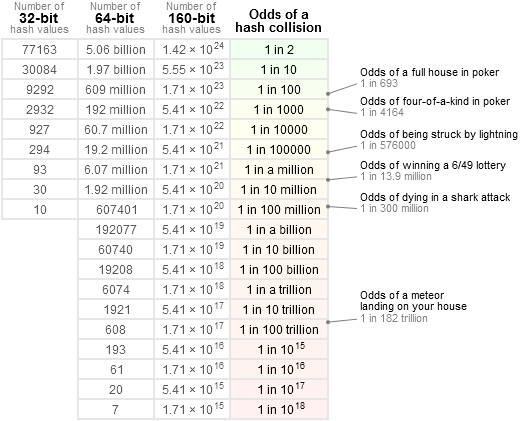

Unique Ids
One of the most important considerations when generating Ids is the probablity of collisions.
Collision Probability
Each client must be able to generate new Ids independently, to avoid dependencies on a server in peer-to-peer situations, and to avoid introducing deadlocks with the Unity programming model (such as needing a server to respond before all Start() calls can finish).
The probability of collisions between two independently well-generated identifiers is the Birthday Problem. The probability of a collision is given by,

On regular desktops, it is not possible to compute this for the typical numbers involved due to floating point quantisation. However there are approximations, such as the following which will work in Matlab,
p = 1 - exp(-(n^2)/(2*(2^b)))
As the figure below shows, the probability of collisions depends on the number of objects in the scenario n, as well as the identifier length b (in bits). In Ubiq, the "scenario" is typically a room.
There are no rules defining acceptable chances of collisions. For example, OAuth 2 specifies a probability of less than 10e-160, which is not achievable even by 128-bit UUIDs.
In the case of a typical Ubiq room, which due to voice chat limitations can support approximately 25 users, a 32 bit value would probably be adequate. The concept of a Room in Ubiq can change depending on how it is used however, so Ubiq tries to avoid making assumptions about the potential collision space. If rooms were considered to be floating regions, for example, then the number of potential users could be much higher.
It is challenging to grasp levels of chance at these scales. The table below by Jeff Preshing presents collision probabilities more intuitively. (The numer of hash values below is the number of Objects between all users that could potentially connect in a Ubiq scenario, be that a room, set of rooms, a server, shard etc.)

Generating Random Identifiers
The collision probabilities above are only correct if identifiers are well-generated.
RFC 4122 descibes algorithms to generate 128-bit UUIDs. UUIDs are standardised identifiers on many network services. They are very popular as they can be independently generated quickly, while guaranteeing uniqueness and being amenable to storing, sorting and hashing. UUIDs can guarantee uniqueness beyond the probabilities discussed above because some versions include the use of MAC addresses, which are centrally registered (by the network card manufacturer) and which act as a "pre-shared secret".
RFC 4122 also presents an algorithm for version 4 which is based purely on random numbers. RFC 1750 discusses random numbers in more detail. Acquiring truly random numbers for identifier generation is challenging, as common computer systems rarely have APIs to access sources of truly random numbers. Most systems use deterministic generators of some kind, initialised with a seed. If there are dependencies between different sections of random number sequences, or covariances in the seed between peers, this will change the probability of collisions.
To make a good identifier, best practice is to use as many data sources as possible, with a strong mixing function. A strong mixer is one where each output bit is a complex, and different, function of all the input bits. The example given in RFC 4122 is to gather data sources into a buffer and use a message digest function such as SHA-1.
Identifiers and Bandwidth
A motivation for minimising id size is to reduce overhead. In a packet sending a Vector3 a 16 byte (a 128-bit UUID) overhead for the Id would have an overhead of 133% without even the Component Id. Though, on modern networks even a large relative overheads may not be problems so long as the total packet size is low. IPV6, for example, has a 40 byte header alone.
That is, reducing bandwidth by reducing identifier size is unlikely to be an optimal methodology. It should be expected that Ubiq header sizes increase over time, rather than decrease. Since Ubiq is based on a set of point-to-point connections, future works could consider techniques such as asymmetrical per-connection aliases to optimise bandwidth.
Object Ids in Ubiq
Size
Currently, Object Ids are represented by 64 bit numbers. This is because the collision probability for this length is very low for scenarios anticipated by Ubiq in the near future, but it is still easy to handle; 32 bit is too small, while 128 bit would require explicit serialisation/deserialisation, hashing and equality comparisons. 64 bit numbers can be stored in a long and nowadays even mobile platforms use 64 bit processors.
Unique Ids in Unity
Unity provides a number of data sources for hashing inside the Application and SystemInfo classes, however these are not accessible in class constructors. Therefore the .NET System.Environment, System.DateTime and System.Random classes are used.
References
-
Jesus, P., Baquero, C., & Almeida, P. (2006). ID Generation in Mobile Environments. 1–4. http://hdl.handle.net/1822/36065
-
https://neilmadden.blog/2018/08/30/moving-away-from-uuids/
-
https://preshing.com/20110504/hash-collision-probabilities/
-
https://tools.ietf.org/html/rfc4122